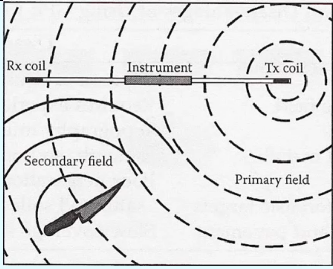

Equipment
Created Wednesday 30 September 2020
@GEOLOGY @SOCIETY @FT @YEAR2
üéûÔ∏èhttps://www.thinglink.com/videocard/1351913890081931266
Restivity
@electrical_resistivity sends electric current into the ground. Resistivity = how much the material resists electricity ≠ conducts electricity.
✅️Can be adjusted for different depths
✅️More Repeatable
✅️Less prone to interference
❌️Low resolution
❌️Affected by soil moisture
❌️Slower than condcutcivity
❌️Not 100% unintrusive: ground needs to be disturbed to implant electrodes
Most minerals have high resistivity
Clay soils have very poor resistivity
@Archies_Law says that resistivity ≃ pore fluid resistivity/ fractional porosity
In this cube ⬇️ Resistance (V in - V out) ∝ L. This is @true_resistivity ≠ @apparent_resistivity R is inversely ∝ to A
Apparent resistivity:
a= the spacing of the probes
R= Resistance
Need to know the current, the voltage, and the volume of ground
@electrical_resistivity_tomography @Tomography
@Soil_auger measures the @soil type and @soil_horizons
Resistivity Methods:
1D @Vertical_electrical_sounding compares depth to a single reference point. Gradually increase the spacing of the probes, keeping the midpoint
- 2D @Constant_separation_traversing keeps a constant depth but measures the lateral variation in resistivity over many points. Most common.
- 3D @electrical_resistivity_tomography combines both to make a cross section. The spacing between the electrodes increases on each traverse.
Resistivity Sources of Error:
Poor electrical contact (common if the ground is gravelly or frozen or dry sand) → wet electrodes
Current leakage (if the survey is being done next to something very conductive - metal pipes)
Relief: ditches reduce the current density and hills increase it.
Conductivity
@Bulk_ground_conductivity penetrates ground
Measures ability of materials to conduct electricity → detects metal
@Conductivity ≠ @restivity

✅️Can detect disturbed soil
✅️Equipment is small
✅️Works on all surfaces
❌️Interference
❌️Doesn't work in clay soil
Radar
@Ground_penetrating_radar
✅️Real time
✅️Can calculate depth
✅️ 2D slices can be combined to make 3D images and horizontal @time_slices
✅️High resolution
Can be used in active or passive manner
❌️ Doesn't work well in electrically conductive soils
❌️ Picks up anomalous things such as roots
❌️ Expensive
❌️Slow → limited range
❌️Doesn't work in clay or saltwater or salty soils
❌️Can't see through metal (just bounces back and forth between metal and GPR unit)
❌️Other equipment working at the same frequency will interfere
❌️Heavily regulated and need a license
Often repeated over time to spot changes (useful for decomposing bodies)
GPR comes in a range of sizes and shapes
First used to measure the depth of a glacier in 1929
Origionally used in millitary use
Onboard Mars rovers
Misconceptions:
The equipment only sends a beam directly down: energy is emmited in all directions, despite attemps at metal shielding → anomolous readings
GPR will find everything you want: it will find everything, including all the rubbish down there
A @Dielectric_constant is a measure of how fast radar penetrates a material. A lower value indicates faster penetration. This is why you should note the ground material when surveying
GPR is in the red range⬇️ so other equipment using the same frequency including mobile phones or phone masts will interfere with the data.
@Theodolite or @LIDAR
Interpeting GPR data:
@Hyperbolas
Planar Surfaces
Voids
Trenches
Metal → @ringing
Making GPR more efficient:
@Arrays (bumper family pack of GPR units dragged by a truck). Also keep a constant offset
@Multi_frequency_arrays combine different bandwidths into one piece of equipment to calculate different depths
Some units can move in both directions at once
Magnetometry
@Magnetic_gradiometry @magnetometry
✅️Quick
✅️Land air and sea
Metal Detectors
@Metal_detector
Can detect anything conductive (not just metal)
Some can discriminate between metals
❌️Can't detect bodies unless they've been buried with metal
Water based searches
@sonar used for @shipwrecks and archaeology
@Water_penetrating_radar = GPR in a boat
@Water_lidar
ElectroMagnetic
Makes use of subsurface propagation of alternating electromagnetic waves
Conductivity is an active EM method, as are metal detectors
Em detects contrasts in electrical conductivity
❌️Equipment has to be calibrated in a non conductive spot before it can be used
@Cat_and_Jenny survey is used to find smaller items that are more difficult to find
✅️Fast
✅️Can measure at different depths
✅️High resolution
✅️East to generate maps
✅️Can tell the difference between background and disturbed soil
✅️Can be used in woodland and concrete
❌️Affected by metal structures above ground
❌️Time lag
❌️Anomoly shapes can be hard to interpret
❌️Doesn't differntiate between true and apparent conductivity
❌️Doesn't work in clay soils